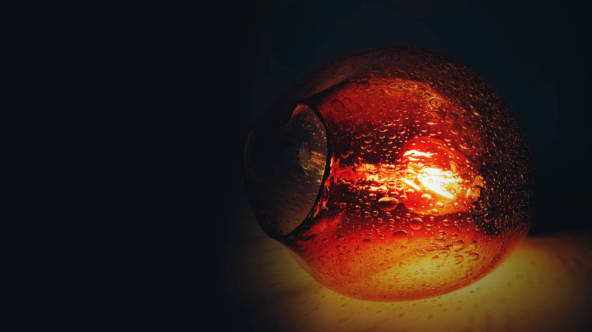
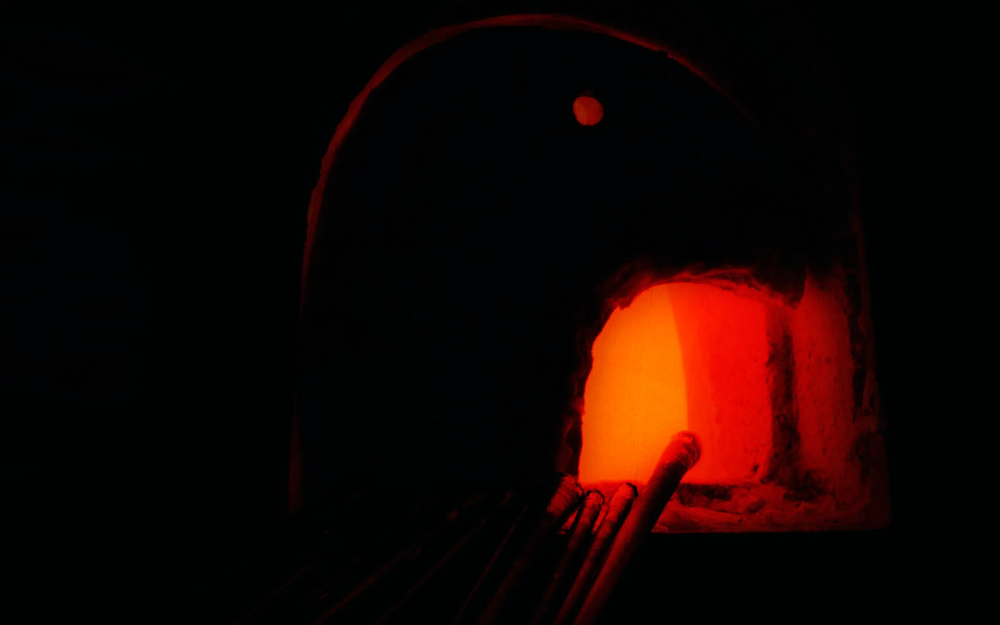
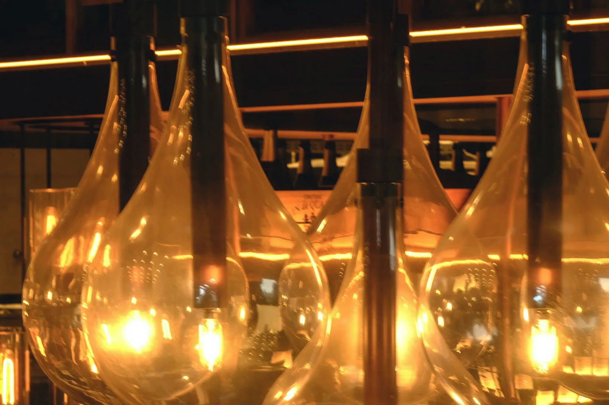
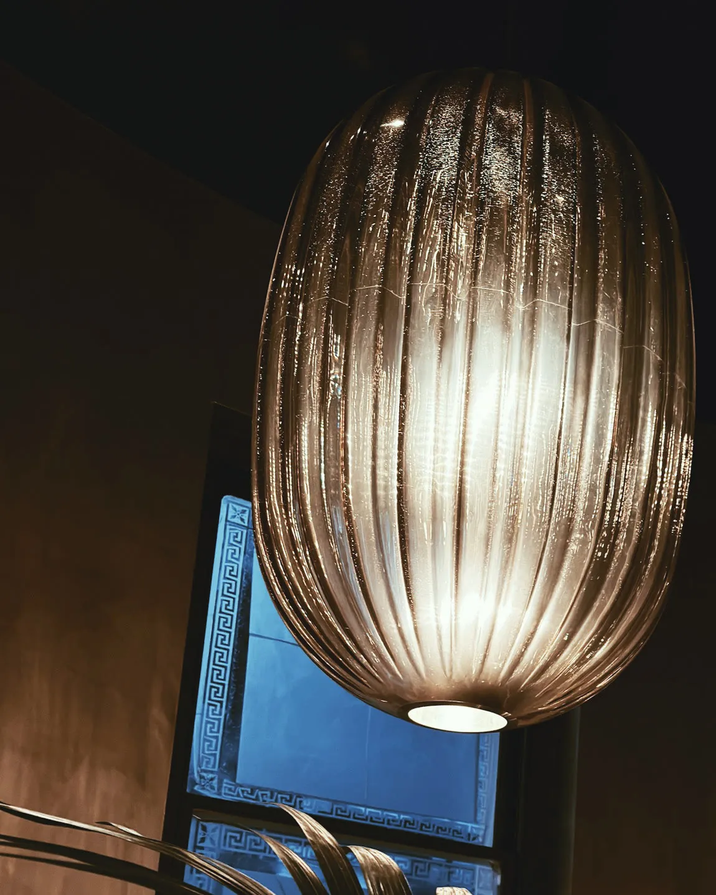
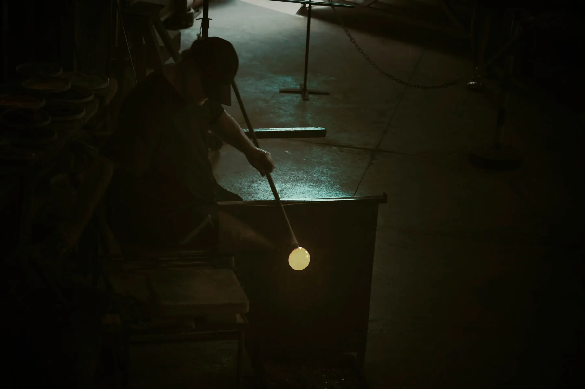

Four lights we
make all year.
Each one blown here by one of us and fitted with the bulb we chose the glass for. Pendants come on six feet of cord, cut to your ceiling.

blown at the furnace1,120 °Clit over your table2,700 KHand-blown pendants and table lamps from a two-person studio in Tacoma. Made to order in eight to ten weeks.
Each one blown here by one of us and fitted with the bulb we chose the glass for. Pendants come on six feet of cord, cut to your ceiling.

1,120 °C
Gathered
Glass from the furnace, wound onto the end of the pipe.
1,080 °C
Shaped
Reheated at the glory hole and blown, a breath at a time.
482 °C
Cooled
Overnight in the kiln, so it never cracks in your room.
2,700 K
Fitted and lit
Wired here and lit once. We send you a photo before it ships.


We also blow runs of six to forty for restaurants and hotels, matched to one another and to the room. Both of these are lit tonight.
Ask about a run
11 am – 4 pm
Stand behind the rope and watch a light being blown. We start one on the hour.
Send the room, the ceiling height and how many lights you have in mind. We post you a chip of the glass before you pay anything.